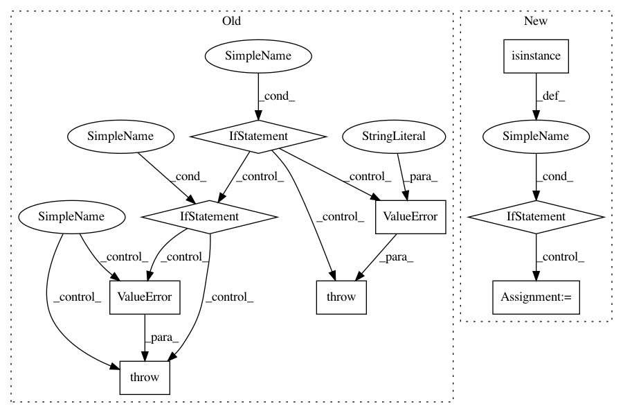

023331ec2a7b0086abfc81eca16c84a1692ee653,keras/layers/convolutional.py,Cropping2D,__init__,#Cropping2D#Any#Any#,1754
Before Change
self.cropping = tuple(cropping)
if len(self.cropping) != 2:
raise ValueError("`cropping` must be a tuple length of 2.")
if len(self.cropping[0]) != 2:
raise ValueError("`cropping[0]` must be a tuple length of 2.")
if len(self.cropping[1]) != 2:
raise ValueError("`cropping[1]` must be a tuple length of 2.")
if data_format not in {"channels_last", "channels_first"}:
raise ValueError("data_format must be in {"channels_last", "channels_first"}.")
self.data_format = data_format
self.input_spec = [InputSpec(ndim=4)]
def build(self, input_shape):
After Change
data_format=None, **kwargs):
super(Cropping2D, self).__init__(**kwargs)
self.data_format = conv_utils.normalize_data_format(data_format)
if isinstance(cropping, int):
self.cropping = ((cropping, cropping), (cropping, cropping))
if hasattr(cropping, "__len__"):
if len(cropping) != 2:
raise ValueError("TODO")
height_cropping = conv_utils.normalize_tuple(
In pattern: SUPERPATTERN
Frequency: 3
Non-data size: 9
Instances
Project Name: keras-team/keras
Commit Name: 023331ec2a7b0086abfc81eca16c84a1692ee653
Time: 2017-02-09
Author: francois.chollet@gmail.com
File Name: keras/layers/convolutional.py
Class Name: Cropping2D
Method Name: __init__
Project Name: keras-team/keras
Commit Name: 023331ec2a7b0086abfc81eca16c84a1692ee653
Time: 2017-02-09
Author: francois.chollet@gmail.com
File Name: keras/layers/convolutional.py
Class Name: Cropping3D
Method Name: __init__
Project Name: ray-project/ray
Commit Name: 6373c706615bc94c0a1e7fc564b3d18c3d342d91
Time: 2020-04-30
Author: ed.nmi.oakes@gmail.com
File Name: python/ray/serve/api.py
Class Name:
Method Name: create_backend